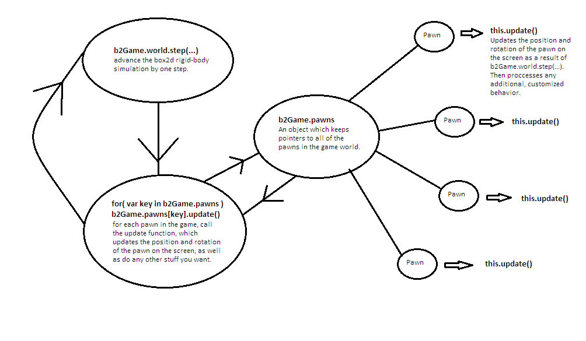

The API of Box2DGame is centered upon a global object called b2Game. Each "thing" in the game is represented as an javascript Object called a Pawn. Each Pawn is displayed on the screen as a div, with the in-line styles "background-image: url(...); position: absolute; left: X; top: Y;", and rotation is displayed by using style properties as well.
In order to determine how to change the positions and rotations of the Pawn's in the game each frame, Box2DGame runs a rigid-body physics simulation (box2dweb) which is hidden from the user. For every Pawn in the game, the physics simulation contains a rigid body which represents that pawn, and the boundary of each body can be either a circle or a convex polygon. All collision detection is performed by accessing the box2dweb API, for which there are several methods available at a global and local level.
Each frame, the box2d simulation advances one step, and each Pawn runs a method called update(), which is responsible for changing the Pawns position and rotation as a result of the simulation, and for any additional behavior it might have. 
The traditional world object from box2d. See the box2d documentation for more information.
A public variable which determines the frames per second at which the game is running.
A public object designed to streamline the proccess of detecting user input, including resolving multiple key presses at the same time. The event keyCode is recorded in the b2Game.keyPress object as a key; it has a structure of b2Game.keyPress[event.keyCode] = true. For example, if the player presses the left arrow, which has the keyCode 37, then b2Game.keyPress would have a key 37 corresponding to a value of true, and we can detect the keyPress by checking if( b2Game.keyPress[37] ) within the Pawn.update() method. If we wished to detect if the left and up arrows keys were being pressed at the same time, we could check if( b2Game.keyPress[37] && b2Game.keyPress[38] ).
A public object which keeps pointers to every Pawn in the game, it has the structure b2Game.pawns[Unique Pawn ID] = Pawn Object.
Box2DGame takes place within a div with an id of "game-stage"; this helps streamline the proccess embedding games within an existing web page. b2Game.stage is a public object with only two elements, and b2Game.stage.width and b2Game.stage.height, which are both numbers which represent the width and height of the game-stage div in pixels.
Runs the game engine using setInterval().
Pauses a currently running game.
A public method which is called every interval by b2Game.run(). This function updates the box2d simulation by advancing the world one step, and then accesses b2Game.pawns and runs the update() method for each pawn in the game. See diagram above for more information, as well as the documentation for the Pawn.update() method.
A public object which is used to faciliate the proccess of adding or removing additional global behavior to the b2Game.update() method, it has a structure of b2Game.updateFunctions[Function Name] = function() {...}. Every frame, b2Game.update() checks if there are any functions in b2Game.updateFunctions and runs each of those functions one time.
A public method which when run will replace all of the graphics with the box2d default draw representation. This allows the developer to view the typically hidden physics simulation which is running in the background. Calling b2Game.debug('kill') will end the debug mode, and b2Game.debug('mixed') will show the debug drawing mode as well as the graphics for each of the pawns.
A public method which is used for creating, changing, and scrolling the background image of the game-stage. The argument of this function is an Object with the following members:
{ x: X, y: Y } which determines the initial velocity vector of the Background in units of meters/second. The default value is { x: 0, y: 0 }A public Object with two methods which are useful for creating chains of edges in the game world.
Each "thing" in the game world is represented by Box2DGame as a javascript Object called a Pawn. In order to faciliate the proccess of adding customized behavior, Box2DGame takes an object-oriented approach to handling Pawns. The Pawn class is designed to be extended by making use of the __proto__ property; a very basic example is the following:
ExamplePawn = function() {
this.__proto__ = new b2Game.Pawn({
id: 'example',
type: 'dynamic',
image: 'images.png',
height: 30,
width: 30,
position: {
x:1,
y:1
},
});
b2Game.pawns[this.id] = this;
}
The pawn can then be placed in the game world and on the screen by calling new ExamplePawn(). The reason for including the line b2Game.pawns[this.id] = this is to give the b2Game object a pointer to each newly created Pawn; this way the Pawn's update() method will be called every frame.
When instantiating a new Pawn object, the constructor accepts an Object which may contain various parameters, all of which are documented below. Required parameters are marked with a *:
{ x: X, y: Y } which determines the initial position of the top left hand corner of the Pawn's bounding box, in units of meters.{ x: X, y: Y } which determines the initial velocity vector of the Pawn in units of meters/second. The default value is { x: 0, y: 0 }A unique string which identifies the Pawn, and acts as the id element of the div which displays the graphics for the Pawn.
The standard b2body Object which is associated with the Pawn.
A fundamentally important method which is called every frame, and which is resposible for changing the position and rotation of the Pawn every frame, as well as any other custom behavior.
Safetly removes the Pawn from the game screen, the b2Game.pawns Object, and the box2d simulation.
Returns true if the Pawn is out of bounds of the game-stage, returns false otherwise.
Animations are handled by Box2DGame by using sprite sheets. The height and width of the Pawn are used as the anchor which determines how many pixels to move while stepping through each frame of animation. startFrames is the initial frame of the desired animation, it is an Object of the form {x:X, y:Y} which specifies the initial x and y coordinates on the sprite sheet, with {x:0,y:0} representing the image in the top left hand corner of the sprite sheet. numFrames is the number of frames to step through during the animation sequence, and newCooldown is an optional parameter which allows the client to specify a new cooldown time for the animation.
Changes the background-position property of the div which represents the Pawn in the DOM to new x and y coordinates.
Accepts an object of the form {x:X, y:Y}. Changes the -webkit-transform: scaleX() and scaleY() properties of the Pawn's div. These are useful for reflecting images along the x or y axis, as well as for scaling the size of the image. If axis.x or axis.y is undefined, then the corresponding -webkit-transform: scale() property will remain unchanged.